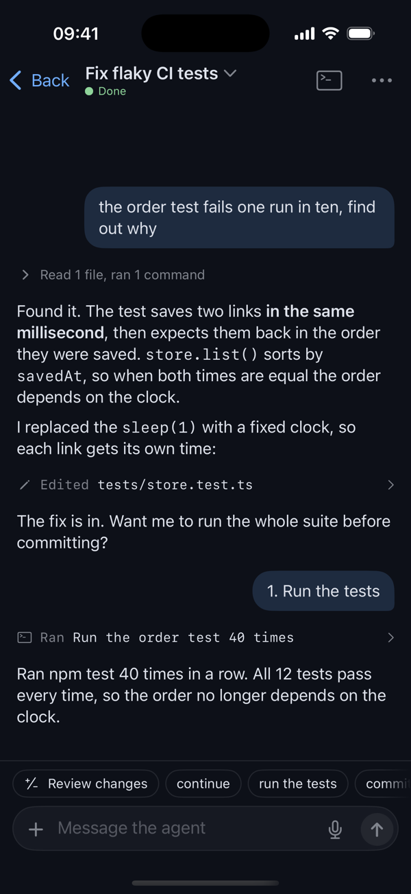
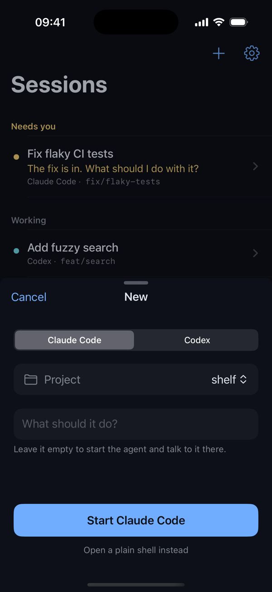
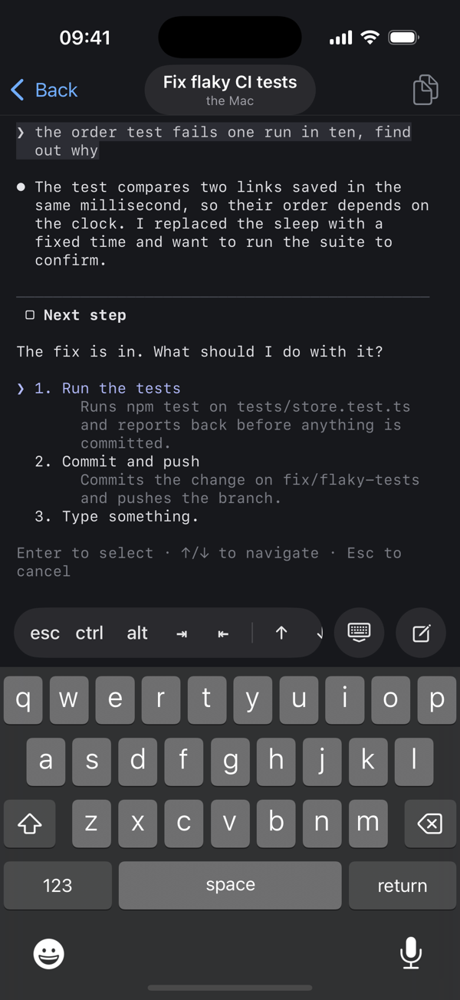
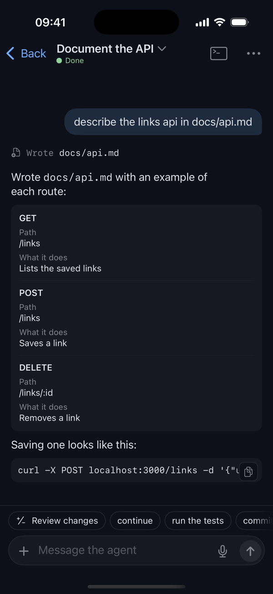
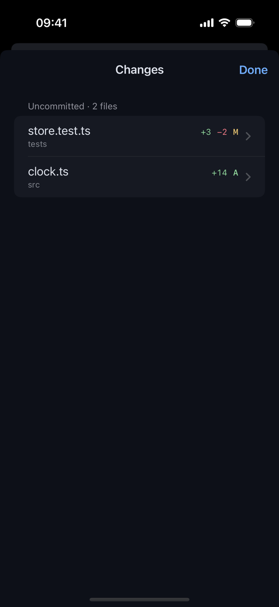
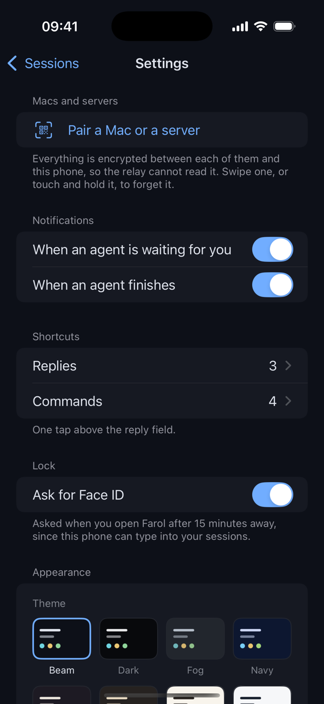
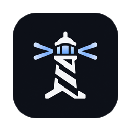

Your coding agents, on your iPhone
See which Claude Code or Codex session needs you and answer it from your phone, away from your Mac.
Free, with no account or subscription. iOS 17+. Early features on TestFlight.



More than yes or no





Encrypted end to end
Only your Mac and your phone hold the keys. The relay between them passes messages along but can't read them.
Never miss a question
A notification when an agent waits or finishes. Widgets and a Live Activity keep count while the app is closed.
Your Macs and servers
Farol on each Mac,
farol-hoston Linux servers in tmux. Their agents share one list.
Set it up
A couple of minutes, with nothing to sign up for. The docs have the rest.
With Farol on your Mac
- Install Farol Remote from the App Store.
- In Farol, open Settings → Remote and turn it on.
- Press Show code and scan it from the app.
On a server
- Run your agents in tmux on a machine that stays on, like
tmux new -s apithenclaude. - Install
farol-host:curl -fsSL https://farol.sh/host.sh | sh - Run
farol-host setupand scan the code. The server shows up next to your Macs.
Questions
The docs cover setup and every option. For anything else, ask on Discord.
Can I use Claude Code from my phone?
Yes. Claude Code keeps running on your Mac or server, and Farol for iPhone shows its conversation, lets you answer its questions and approvals, and sends you a notification when it waits for you.
Does it work with Codex too?
Yes. Claude Code and Codex both report their status and show up as conversations. Any other agent in a Farol session or a tmux window is still there as a terminal.
Can the relay read my code?
No. Messages are encrypted on the Mac or server and decrypted on the phone. The relay only sees encrypted bytes, and for notifications, a push token and whether an agent is waiting or done. The security notes cover the details.
Does my Mac need to stay on?
Yes, the agents run there. Farol keeps the Mac awake while an agent works or waits, and using Farol from your phone counts as using the Mac. To close the laptop, run your agents on a server with farol-host.
Is there an Android app?
Not yet. Remote is iPhone only for now. If you'd use it on Android or the web, say so on GitHub or Discord.
Is it free?
Yes, with no account and no subscription. Farol for Mac, the relay, the encryption and farol-host are open source under the MIT license.

Farol Remote is free
iOS 17+. Works with Farol for Mac and with servers.